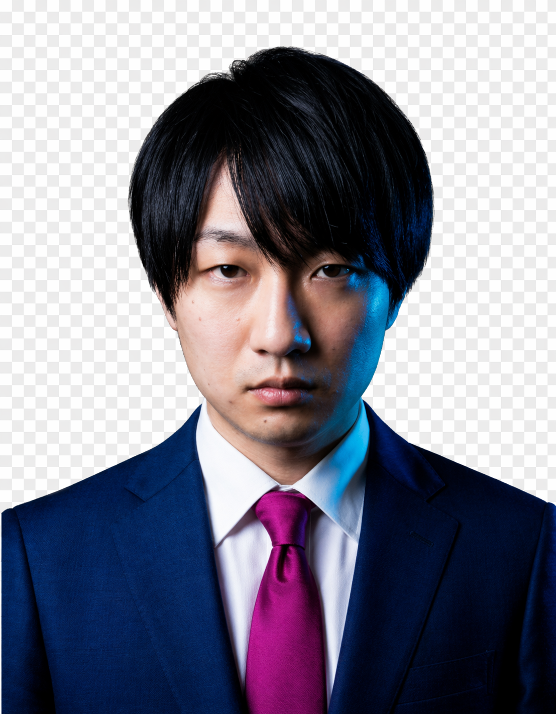

Message
メッセージ
考え中…
Policy
基本政策
1. 自治【「すぎなみ魂」の継承と権力の刷新】
中央の管理から脱却し、常に新陳代謝し続ける「生きた自治」を取り戻します。
- 多選自粛の復活（杉並区長の在任期間に関する条例の再制定）: 田中前区長が廃止した「3期12年制限」を復活させます。権力の腐敗を防ぎ、常に新しい知性が行政をアップデートし続ける仕組みを実装します。
- 都道拡幅計画の中止と自主防衛: 住民の生活を壊す道路拡幅を阻止。杉並の外に「自治領（サテライト拠点）」を確保し、自ら土地を管理・警備・耕す実力行使を通じて、真の独立自尊を体現します。
- 「万邦共栄」の理念: 異質な文化や個性が、それぞれ独立して散らばっているからこそ世界は面白い。画一的な正義の押し付けを拒絶します。
2. 経済【「場」を作る雇用と多角的な財政戦略】
AI時代に備え、人間同士の「つながり」を価値化し、区の財政を円以外の資産で守ります。
- 共同体を再生する「地域通貨」: 法規制をクリアした実利的な形で導入。外資プラットフォームへの手数料流出を止め、地元の個人店での循環を最大化します。
- 雇用創出型「公共スポットワーク」: 自治領の施設建設や管理、ラーニングコモンズの講師などを「公共事業」として展開。報酬を地域通貨で支払い、街を支える実感を「地元の店での一杯」に変える循環を再起動させます。
- 円以外の通貨への分散投資: PayPay還元等のバラマキを停止。その予算を外部拠点でのBTCマイニングやAIデータセンター運営へ振り向け、区が自前で円以外の資産を保有する「攻めの財政」を断行します。
3. 教育【知の共有財の還流と成長の保障】
杉並の伝統知と最先端の視座を融合させ、次世代の才能を街に繋ぎ止めます。
- 杉並ラーニングコモンズ: 哲学・芸術から生存技術まで、老若男女が無料で学べる場。講師自体を公共事業の雇用とし、知恵を出すことがそのまま地域での生存に繋がるエコシステムを構築します。
- 奨学金返済の区による肩代わり制度: 区内に定住し、地域活動や技術継承に従事する者の負債を補填。「頭脳流出」を防ぎ、街の物語を更新し続ける知的活力を確保します。
4. 空間【身体の自由と「科学的多様性」の実装】
「排除」や「押し付け」を排除し、身体の自由と科学的根拠に基づいた真の共生を実現します。
- 「科学的多様性」への修正（性の多様性尊重条例のハック）: 岸本区政の画一的な多様性の押し付けを正し、医療等の公共サービスにおいて生物学的・科学的な区別を明確に維持。アクシデントを防ぎ「科学的現実」に基づいた共生モデルへ変更します。
- 不当な排除の全廃（杉並区暴力団排除条例の廃止）: 「属性」による一律の排除は、不自由な社会を生みます。刺青があるだけで銭湯から追い出されるような不寛容な制度を終わらせ、身体の自由を公共空間に取り戻します。
- 杉並フリーベースプロジェクト: 区有施設を活用し、低賃料で個人の居酒屋や小商いが入居できる「文化の実体のシェルター」を整備。家賃高騰から表現の場を死守します。
5. 防災【今の街を壊さない「守るテクノロジー」】
「街を壊す防災」から「街を守る防災」へ、サイバー・ローカリズムを断行します。
- 防災ドローン隊の実装: 道路を広げずとも、狭小路地へ迅速に消火・救助支援を行う自律型インフラ。歴史的な風景（すぎなみ魂）を壊さずに安全をアップデートします。
- 生存インフラの完全自律: 外部拠点の電源、食料生産、独自の通信網により、たとえ中央のシステムが停止しても、杉並だけは「灯が消えず、食料が届く」状態を維持する究極のレジリエンスを構築します。
Autonomy 2026
杉並自律都市構想 2026
基本理念：万邦共栄・八紘一宇
大なり小なり、異質な文化がそれぞれ独立して散らばっているからこそ、世界は面白さに満ち溢れ豊穣である。効率優先の画一的な管理を拒絶し、個の自律と身体性を核とした「不沈の都市国家」を実装する。
1. 田中良 前区政への批判的検証
強権的な管理と、物理的な破壊を厭わない「昭和の防災論理」への審判。
| 対象条例・施策 | 批判内容 | 上梨ゆうすけの「自由の実装」 |
|---|---|---|
| 杉並区長の在任期間に関する条例 (2010年12月廃止) |
【権力の腐敗】 自身の長期政権のために多選制限を廃止。トップの固定は行政の停滞と、時代への適応力喪失を招く。 | 「廃止の廃止」: 多選制限の復活。3期12年制限を再制定し、常に新しい知性が行政を刷新する仕組みを確立する。 |
| 杉並区暴力団排除条例 (2012年4月施行) |
【不当な排除】 属性による一律の排除は「身体の自由」を侵害。刺青による公衆浴場利用制限など、不自由な差別を助長。 | 条例の全廃と「身体主権」回復。属性排除を廃止し、身体の自由を公共空間に取り戻す。不干渉と相互承認の文化を重んじる。 |
| 杉並区狭あい道路の拡幅に関する条例 (2016年7月 改正施行) |
【街の破壊】 行政代執行による強制撤去を規定。防災を口実に住民の生活実態（身体性）を破壊する。 | 代執行停止とドローン防衛。道路拡幅ではなく、ドローン隊による空中防衛を優先し、今の街並みを死守する。 |
2. 岸本聡子 現区政への批判的検証
画一的な「多様性」の押し付けと、富の外部漏出を伴う「他力本願」への審判。
| 対象条例・施策 | 批判内容 | 上梨ゆうすけの「自由の実装」 |
|---|---|---|
| 性の多様性尊重条例 (2023年4月 施行) |
【非科学的な多様性】 生物学的な性差を無視した押し付けは、医療や公共サービスでのアクシデントを招くリスク。 | 「科学的視座」への抜本修正。多様性を尊重しつつも、科学的・生物学的現実を重視し、実害のない真の共生モデルへ変更。 |
| ポイント還元事業 (2026年6月 予定) |
【富の外部漏出】 血税を大手IT企業の手数料として中抜きさせる「他力本願」。杉並の富を外に逃がす敗北。 | 「独自通貨」と「マイニング投資」へ転換。ポイント還元を停止し、予算を独自通貨の基盤整備と BTC マイニング等の攻めの投資へ振換。 |
| 子どもの権利に関する条例 (2025年4月 施行) |
【管理された成長】 子どもを保護される「客体」としてのみ扱い、行政の過剰介入を招き、自律性を奪う懸念。 | 「歴史の主体」の教育。管理ではなく、自分で立ち、街を運営する技術を教える。講師を公共事業とし雇用。 |
3. 上梨ゆうすけによる独立生存のための5大実装
1. 自治：主権とサテライト拠点の確保
- 外部自治領（サテライト拠点）: 都外に土地を確保。自ら耕し、守ることで、独立自尊の「実力」を養成。
- 万邦共栄の実践: 異質な文化が独立して散らばる豊穣な世界を、杉並から証明する。
2. 経済：計算資源による富の防衛
- 円以外の資産保有: 外部拠点の再エネを活用したBTCマイニング、AIデータセンターの運営。
- 地域経済のデカップリング: 手数料ゼロの独自通貨と「公共スポットワーク（建設・教育）」の連動。
3. 教育：知の共有財（コモンズ）の還流
- 杉並ラーニングコモンズ: 哲学から生存技術まで、老若男女が無料で学ぶ場。
- 講師の公共事業化: 区民が教えること自体を雇用創設とし、地域通貨で報酬を支払う。
4. 空間：実体のある居場所（シェルター）
- 杉並フリーベースプロジェクト: 低賃料で個人の居酒屋や小商いが入居できる物理的シェルターを整備。
- 解放区の創設: 公園や路地の規制を撤廃。排除アートを全廃し、身体の自由を保障する。
5. 防災：非破壊のサイバー・ローカリズム
- 防災ドローン隊: 歴史的な風景を壊さず、空から消火・救助を行う日本最高水準の防衛網。
- 生存インフラ自律: 中央インフラが停止しても「灯が消えず、食料が届く」絶対的レジリエンス。
Profile
プロフィール
19XX年
北海道生まれ。
Support
支援のお願い
上梨ゆうすけの挑戦は、皆様の「結束」に支えられています。
ボランティア、寄附、SNSでの拡散など、力をお貸しください。
Donation
寄付先
PayPay銀行 はやぶさ支店 003 普通 2824588
Contact